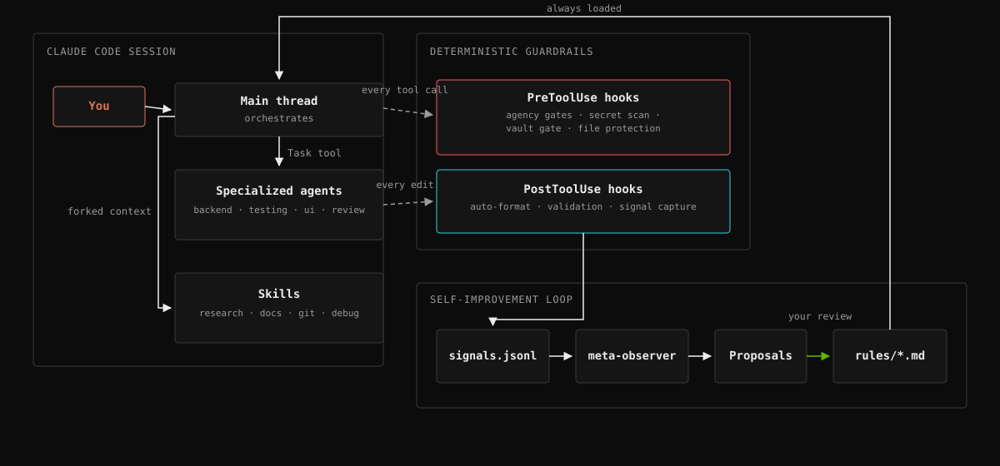
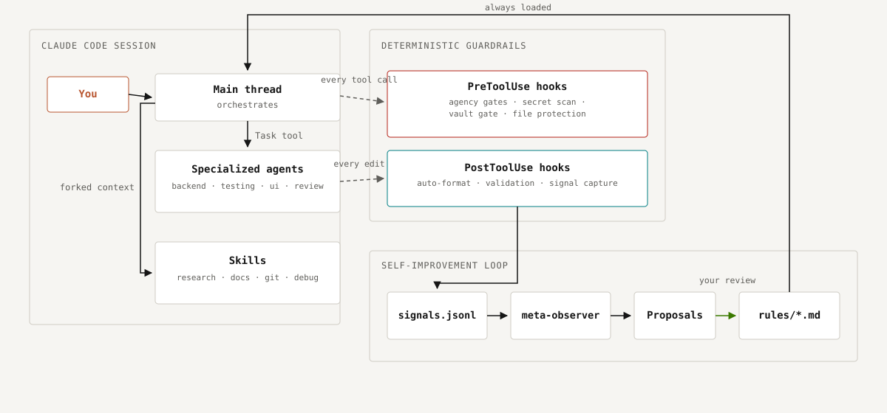

How R.Code for Claude Code works
Rules steer every session, agents do the heavy lifting in isolated contexts, hooks enforce the non-negotiables deterministically — no LLM in the gate — and the observation pipeline turns friction into reviewed rule changes.
How it fits together


Rules → agents → hooks
You
Give a directive — a task, a bug, a question.
Main thread
Orchestrates. Always-loaded rules (rules/*.md) steer it; it plans, delegates, and synthesizes.
Agents & skills
Specialized agents (Task tool: planning · backend · testing · review · UI · research) or forked skills (research · docs · git · debug) do the work.
Deterministic guardrails
PreToolUse hooks
Agency gates, secret scan, file protection — run before every tool call. No language model in the gate.
PostToolUse hooks
Auto-format, validation, signal capture — run after every edit.
The self-improvement loop
- Every edit and session-end event is captured as a lightweight signal —
signals.jsonl. - Once enough accumulate, the
meta-observerskill synthesizes them into concrete proposals for new or changed rules. - You review the proposals.
- Accepted proposals land in
rules/*.md— always loaded starting the next session.
Two ideas worth knowing about
Agency bands (AUTO / SOFT-ACK / ESCALATE). Every tool call is implicitly classified by reversibility, blast-radius, and input trust. Reversible, local, trusted work runs without asking. Anything genuinely irreversible or external — force-push, a production migration, a merge, an outbound message — always gets a real yes/no, even in unattended/autonomous runs.
The observation pipeline. Edits and session-end events are captured as lightweight signals. When enough accumulate, an on-demand skill synthesizes them into concrete proposals for new or changed rules — the framework is meant to improve itself from its own friction, reviewed by you before anything lands.
Optional: the Hausbau output style. By default, answers are written in normal developer language. output-styles/hausbau.md is an opt-in style that explains every technical change through one consistent house-building metaphor — for readers who are not deeply technical (product owners, clients, first-time founders); facts and numbers stay exact, only the language changes. Turn it on with /output-style Hausbau.